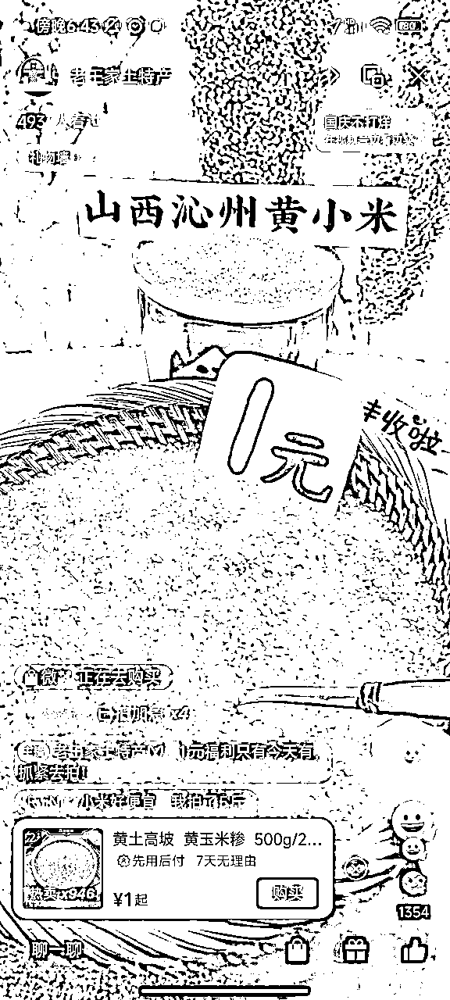
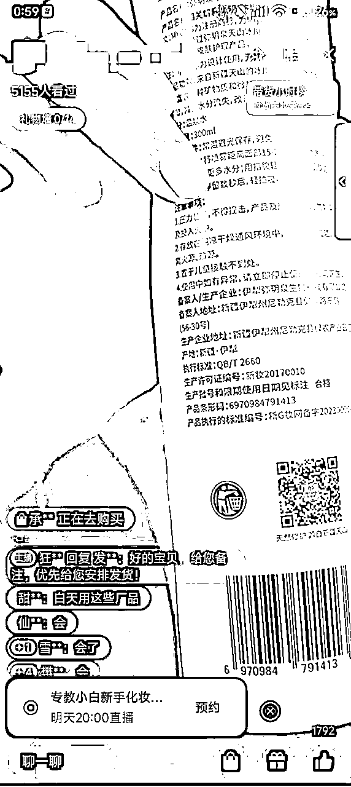

来源：https://trade.feishu.cn/docx/T6A8dbfUEoncKVxew2Sc2jH6nde
不知不觉，做视频号电商带货两年了。
2年前，在生财看到很多人说视频号是大风口，于是果断杀入。
2022年初入局视频号，从自己啥都不懂时候的搬运混剪，慢慢到现在搭建稳定的团队，做到每天20w+场观的内容直播间，中间经历过无人直播，自然流直播带货，短视频进入直播间，微信豆投流。
今年依然有了更多的知识付费头部大V在号召大家入局视频号，这个赛道的热度也越来越高。
想把我这两年做视频号各种赛道的心得体会特别想写一篇简要精炼的内容，希望能帮助到想要在视频号带货变现的各位。
视频号最大的机会仍然是因为相对竞争弱。不是不卷，只是相对抖音来说还是不够卷。
视频号人群对直播间和视频的质量并不是那么挑剔，不会追求精致感与高级感，而是更喜欢接地气的内容，所以草根团队的机会在这里更多，只要能把自己的优势发挥到极致，“60分团队”仍然能杀出重围。
视频号另外一个机会来自于不透明，没有三方数据平台，没有来自于官方的内卷机制（抖音的各种热点宝和猜你喜欢的目的就是让大家都卷死）。
在视频号上，大家都是孤岛，流量红利会吃的更久，闷声发财的机会大。
对视频号人群的认知，之前我们把视频号的主要消费人群定位为“手机上只有微信，不会刷pdd和抖音比价的三四线老年人”。
做了两年后发现，其实很多老年人也有抖音，但是他们更喜欢刷视频号，因为方便，不用切多一个APP，随时看随时关。
视频号仍然存在大量的蓝海机会，很多人做视频号觉得老年人多，所以选品选赛道都会选老年人相关的，但实际上，这两年视频号方便在微信上传播的特性让她的人群扩大很快。
很多在抖音上我们觉得已经特别卷的赛道，比如美妆、护肤、情感等，实际上在视频号上仍然是竞争不充分的。今年年初好几个朋友在视频号上做美妆短视频带货，都拿到了月300w+的GMV数据，让我们感叹相比抖音，视频号还有很大的潜力赛道去挖。
相比其他平台，视频号用户是非常优质的，两大特点：价格不敏感，退货率低。
同样的商品，视频号一般比抖音溢价20%左右，退货率也要低40%左右，两者一结合，视频号上很多商品的利润率就变得可观起来，很多赛道在抖音上只能靠微利走量，而在视频号上就有了更多玩法的想象空间。
视频号的另外一大红利来自于导流私域丝滑，是公域私域结合最好的平台。如果核心业务有公域私域相互切换的场景，利用视频号来做事半功倍。
以前1个人可以实名5个视频号，现在改为了2个，但是1个实名仍然可以认证5个视频号橱窗。相比越来越严格的抖音来说，更好做矩阵。
做视频号之前要记住一句在视频号电商圈广为流传的话：视频号的真正意义不在于“视频”，而在于“号”。
视频号的规则迭代非常快，而且相比另外两个平台，腾讯还是偏严格的，昨天还能一场卖几十万，可能第二天同样的内容和话术直接就被封了。
狡兔三窟，要在视频号上赚钱，哪怕是正规玩法，最少准备好3个号，上不封顶。
很多人不理解视频号的实名关系。实际上视频号有三个实名，要搞清楚，分别是微信实名，视频号实名，橱窗实名。
微信实名即微信钱包中绑定的银行卡实名人，在微信的我-服务-钱包，下方的身份信息可以查看，一个身份证可以实名5个微信号。
视频号实名，一般意义上的理解的视频号实名就是这里，这个实名人可以理解为视频号的所有者，在开直播时或部分安全检查的弹窗实名审核，就需要用这个实名人过审核，一个身份证可以实名2个视频号。
视频号橱窗实名即带货时要认证的实名人，使用此实名人认证视频号橱窗，佣金也提取到此身份信息的账户中，一个身份证可以实名5个橱窗。
这三个实名实际上是各自独立的，微信实名和橱窗实名一个身份可以认证5个，唯有视频号实名是一个身份只能认证两个。所以视频号的实名是最为麻烦的，解决方案也可以用企业身份来认证视频号，一个企业可以认证50个视频号。
微信实名
视频号实名
视频号实名
橱窗实名
视频号的政策不透明，客服回复不及时，也不像抖音那么讲道理，误杀误判申诉得不到结果也是常事。
但是记住盈亏同源的道理，平台规则一视同仁，你会为违规所困扰，同行亦是如此。这种不正规、不透明、不靠谱，正是把更强更正规的团队挡在门外的主要因素，学会用积极的心态来看待这件事。
玩法这东西，没有哪种比哪种更好，只有哪种更适合你。简单暴力的往往不持久，细水长流的往往壁垒高起步慢，竞争都会在无声中达到动态平衡。
基于自己团队能力选玩法，而不是看一篇帖子说xxx玩法赚了多少钱就头脑发热。赚钱这事本就是天时地利人和缺一不可，“别人做这个玩法赚钱了”和“我做这个玩法也能赚钱”完全不是一回事。
个体和小团队，生存下来的第一性原理是能赚到钱，先别去追求“长久”，先拿到正反馈能养活团队再去想其他的事情。
作为一个发展中的平台，利用各种平台“漏洞”赚快钱的机会往往还是挺多的。
细数我做视频号以来赚快钱的机会：22年有搬运混剪、无人直播，23年有废店玩法、连怼（卡特效、卡模板、卡封面……）
大家都知道，这些都是短期玩法不长久，但是这些玩法之所以吸引人的原因就在于足够暴力且难度不高，从另外一个角度来看，长期有短期玩法机会=长期玩法。
我周边的有好几个朋友，不走“正路”，专注各种短平快玩法，每年倒是也都过得很舒服。总结了一下他们的共同点，也是赚快钱的必要条件：执行力。他们都是职业猎手，最明白机会稍纵即逝，赚钱的窗口随时可能消失，一定要在红利期内最快放大。
花上几千上万块钱买各种“最新黑科技”。别人做5个号，他们搞50个号。你觉得996干起来已经很拼了，他们直接轮流值班日不落。
在短期内发动自己能利用的一切资源，放大杠杆，这就是为啥同样公开的信息差，你赚了5000，人家赚了50w的原因。
由于视频号本身与微信绑定的“天然属性”，引流私域的优势得天独厚。视频号可以在简介中留微信，也可以在直播中偶尔展示微信号等，只要不长时间明示，一般不会违规。
标准的引流私域方法是使用直播中的留资服务或者ADQ的留资组件，但是都有使用要求。如果达不到要求无法使用官方留资组件，可以自己开通视频号小店，用企业微信绑定小店客服，引导用户点开头像后点击“客服”按钮，进行进一步私域转化。
视频号和抖音本质区别，抖音是独立的应用，而视频号是依托于微信这个中国第一社交APP。
所以，视频号的底层算法和抖音的一大区别，就是社交属性在分发逻辑中有着较高权重。
社交属性具体是啥？
任何类目都可以选出爆品赚钱，但是每个赛道都有各自的人群，对人群的理解决定了选品的成功率。
所以选品的建议是先选大的类目，比如日用、地方美食、三农、零食、养生等，都是有很多爆品的赛道，选择1~2个大的赛道，然后不断在赛道里深耕，加深对人群和爆品的理解。
最简单的选品方法：跟爆品。
而跟爆品最简单的方法，跟视频号爆品，看榜单。视频号的爆品榜单在选品中心可以看到，每日更新。
榜单选品的要点：
视频号目前除了爆品榜单之外，没有靠谱的三方数据平台，仅有的几个基本又贵又不准。以前我觉得很难受，其实现在想想，是好事不是坏事。
跟爆品的另外一种方法，就是跟抖音爆品，抖音的很多爆品视频号也能爆，仅仅需要稍加筛选即可。具体方法在之前的选品文章（ ）里有讲，不再赘述。
爆品不能无脑跟，因为现在大部分人都会跟爆品，所以爆品的真正红利只有第一波，有时候我们后来杀入，感觉这个爆品不错，但实际上已经在生命周期的末期了。
最近我们打的一个品就是这样子，我们直播间做到了这个品的头部，第一个月每天都能卖2w+，但最近衰退到每天只能卖7-8K，我们已经在计划换品了，但是却发现杀进来的同行越来越多。
判断时效性没有绝对的标准，只能根据经验来判断。个人的几个参考的筛选原则：
跟随永远是稳妥的做法，但是创新才有机会攫取最大的利润。
而创新中稳妥的做法，就是从爆品中挖掘需求，再从需求中找到相似的衍生品。
举例说，酸枣仁茶爆了，痛点是解决失眠需求。如果这个品跟的人很多，我们不想跟了，但是从爆品中发现了失眠需求，就可以去带同样功效的衍生品，比如沉香。同理，从取暖炉到取暖需求，到挖掘新爆品电热毯；从管道疏通剂挖掘到管道堵塞需求，到挖掘出新爆品防堵地漏等。
最深度的选品理解一定源于对内容的思考。
举个例子来思考，我说两个品，同样是调味品赛道的爆品，小炒酱和松茸白灼汁，你能说出哪个是短视频爆品，哪个是直播爆品吗？为什么？
答案是，小炒酱90%的销量都是短视频爆了之后开直播卖出去的，而松茸白灼汁都是做菜教学直播卖出去的。小炒酱的卖点是“万能”，可以通过视频，在短时间内展示小炒酱来炒多个菜的效果，实现强种草。而松茸白灼汁，则是因为在教做菜的直播间中，大家都爱学“白灼青菜”，从而带动白灼汁这个调味品爆火。
在短视频平台，爆品与否往往并不单独取决于品本身，可能一个昨天还没销量的品，会被一个优质的爆款视频带爆。好好琢磨一下这里面的玄机，会非常有助于理解选品和内容的关系。
品不是选出来的，是测出来的。虽然有很多选品理论，但是理论是理论，没必要一味迷信，时间是检验真理的唯一标准。
选出来的品，要有确定的测试标准。如果是短视频自然流，3种模板/文案，30条视频基本跑不出来就可以确认pass。如果是付费投流测品，消耗个1w，测上5个模板，心里也就有底了，卡好赔付，成本还是可控的。
测品这件事没得技术可讲，要讲的是纪律。就像炒股一样，买了股票要设止损线，跌过止损线坚定地抛掉，不要对股票有感情。测品同理，数据是客观的，用期望思维来运筹帷幄，打品看的不是一个品的成败，而是多次下来的总期望收益。长期下来，坚决按大数据结果执行的纪律执行结果，一定优于对天才般奇思妙想的执著。
做短视频最好的万能法则就是抄超钞。
抄：抄什么？选品、选题、黄金三秒、脚本框架、金句，不同视频的爆点不同，找到对标视频爆点是做短视频的基本功
超：怎么超？同上，除掉爆款要素，其他要素都可以试着去超。哪里弱超哪里，画面拍的更精致，添加点金句，表现形式更好，都可以去超，但是爆款要素不要改，哪怕认为原视频拍的很糟糕，但是能爆就有理。而且在超的时候也要ab测试，不要主观去判定对标人群的喜好，切忌自作聪明的超，越超越倒退。
钞：前期账号权重不高，推送人群可能不精准，如果对内容有信心，可以适当投流买一些精准的播放量，提高起号概率。
最近口播IP玩法特别火，这个玩法长期吗？从名字就能看出来，毫无疑问的长期，本质就是“靠着自己说来带货”，这种玩法肯定是不会被平台所禁止的，而且永远有市场，所以这个玩法长期能玩。
这个项目的优点有很多，通俗易懂门槛低，上手简单，容易拿到正反馈，非常适合新手入门视频号带货。但是同样的，盈亏同源，门槛低的另一面就是竞争激烈。你能做我也能做，导致的直接结果就是“卷”。由于这个项目已经火了有半年时间，选品跟品、口播拍摄、视频剪辑、发布技巧、直播转化能力这些大家都懂，不懂的有代拍、有代剪、有代播，没有号可以租，理论上来说，我可以全程外包，只做居中调度。
项目卷到了这个阶段，除了5%具备较强口播能力的大佬来说，其余95%的人已经没有本质的区别，新手和老手之间并没有不可逾越的鸿沟。高度内卷的结果就是，总有人能爆，但没有人总爆，很多在做这个赛道的小伙伴是越来越焦虑的。
破局的方向，或者说，能在这个赛道赛马成功的核心竞争力是什么？口播能力毫无疑问是一个，就像人人熟知的木头，拍的大部分作品都能爆，毫无疑问这是非常客观的实力。背后的努力和沉淀，把对文案的理解，对发音的练习，对用户心理的揣摩，都做到了极致。但是对普通人来说，要做到这个水平还是有些难度的，可复制性不强。
普通人如果想继续玩这个赛道，文案编写能力和对组织架构的搭建能力会成为未来的两大核心竞争力。
文案编写能力决定了单个作品的爆率。一个品已经确定是爆品了，之前大家都是快速拿来别人的视频来混剪，或者拿爆款文案来自己实拍，但是在卷的越来越快的今天，好的文案很快就被扩散出去，导致爆款文案的周期越来越短。容易爆的往往是新文案，所以在未来，如何创作出来优质的“第一手”新文案，是一个重要的破局思路。
对组织架构的搭建能力决定了最终结果的下限和上限。大家明白“总有人能爆，没有人总爆”的道理，也都明白用数量对抗概率的解决方法。但是这个“数量”，已经不是10个号，20个号的量级了，假如我要以50个号为基本单位来做这个项目才能有确定性结果，怎么去找这么多号，怎么去剪辑这么多作品呢？
自己一个人毫无疑问是不行的，需要组织更多的人力来做这件事，把自己从一个“技术宅”变为“资本家”。当思考到了这个层面，这已经不是一个基于项目的技术问题，而是如何搭建一个高效的组织架构的管理问题了。
举例来说，如果我们要找更多的人来做更多的事情，随便列举有几种常见的组织架构搭建方式：
各种方式的优缺点是什么？如何针对不同模式设定目标和激励？各种模式的上下限高低？根据发起者的不同能力和性格，分别适合哪种模式？在高度内卷的当下，这些才是未来能否在短视频口播继续玩下去要思考的事情。但是这个话题如果展开聊的话太大，此处权当抛砖引玉，大家可以再去自己衍生思考。
上面讲了文案，其实对普通人来说，往往最值得研究但最容易被忽略的就是文案。一个好的文案，或者一个好的黄金三秒，其实可以屡试不爽的换到很多品上来带货。比如之前带茶卡盐的文案，用食品安全作为爆点，不仅在茶卡盐爆火时能做到条条大爆，后面同样的文案换到酱油、醋、味精，都能爆，这就是文案的魔力。
选品难，找爆品难，有两个更确定的解决方案，一个是从文案倒推选品，把不爆的品打爆，还有一个就是用新文案打爆品，让已经确定的爆品再爆一次。
对文案的理解其实也是对人群的理解，短视频的“黄金三秒”，大多数人的理解是用黄金三秒提高完播率，但黄金三秒其实还有另外一个非常重要的作用是圈人群。一个品的文案爆了，我们觉得热度已过，其实是这个文案圈定的人群已经被洗干净，而换了一个文案仍然能爆的原因，往往是因为这个文案又给这个品开辟了一个新的人群。
短视频带货，为啥挂了车就没流量了？这是个新手常遇到的灵魂问题。
短视频不挂车，考核的是视频对客户的吸引力，赛马的核心数据是完播率和平均停留时间，也就是视频只要本身吸引人就可以了。但一旦挂了车，视频的性质就成了营销视频，对数据的考核除了停留和完播，还加上了带货商品的点击率和转化率考核，也就是说，要是用户只对内容感兴趣，但却没人点挂的商品，视频一样跑不动。这就是为啥同样的内容，不挂车跑的很好，挂了车播放直接不到100的根本原因。
所以，现在视频号主流的短视频玩法还是发不挂车短视频，短视频爆了开直播转化，这样短视频爆的概率能够大大提高。同时，如果短视频进入到直播间的流量，转化的不错，那直播间也能反过来放大短视频的播放量，从而实现短视频和直播间的双频共振。
这样操作的唯一问题就是，视频爆了但是没能及时看到导致流量大量浪费。为了解决这个问题，我们专门开发了一个工具来检测设置短视频播放量，爆了以后自动提醒，解决了短视频流量浪费的问题，如果有这个需求的话可以搜索公众号小微智能管家注册使用。
视频号上的大部分受众对粗糙视频的接受度很高，诸如字幕错一两个字，前后不一致等问题，并不会对视频数据造成什么影响。尤其是对于带货视频来说，不做人设，也不用做太精致，核心是抓好文案和黄金三秒。
大多数情况下，提高产量产出更多视频的性价比要高于抠细节做出超级精致的视频。
短视频的玄学，同样的内容，有的号就容易爆，有的号就不容易爆，是玄学吗？
但是仔细想想背后的底层原理，系统是基于程序代码按照确定的逻辑运行的，众生平等，绝对不会存在一会1一会2的问题。也就是说，我们所谓的“天生”问题，背后一定也是有逻辑的，没有无缘无故的垃圾，也没有无缘无故的好号，这是这里面的差异是黑盒，我们看不出来而已。
系统给新号推流，一定是先推一部分流量，根据数据反馈，再来决定第二波流量推多少，推什么人。第一波，先给你推100人，随机的，各种人都有。这时候，第一波数据的反馈就极为重要，因为第一波是“完全随机”的。
比如我们的受众人群是老年护肤人群，刚好这100个里面有40个精准人群，那这个数据就很好，而且也知道后面给推谁了。但如果这100个里面，男的就50多个，女的不多，对护肤感兴趣的只有5,6个，刚好大部分人都不喜欢这个视频，那这个数据反馈就不好。最重要的是，系统从这100个人的反馈里面，啥信息没获得到，不知道接下来给我推谁，结果第二波推的200个人，也是胡乱推送的，于是，这个视频就死于播放量300。
所以一些小众的带货内容，天生就是相对不好爆的，起号时还是比较看运气成分的。起号时先从人群出发去思考，可以先去锚定一个相对大的人群，定位精准后再逐步缩小，而不是上来就去做特别蓝海的内容。很多时候短视频不爆，不是这个品没受众，而是这个受众很难定位。
视频号上违规是常态，心态要放平，先接受，再解决。再次默念：视频号的真正意义不在于“视频”，而在于“号”。
遇到违规不要慌，先判断违规是处罚视频还是处罚账号。如果是处罚视频，无视或者隐藏掉即可，只是后面要倍加注意，再违规处罚就要升级了。
如果是账号违规，申诉是唯一可以挣扎的手段了，具体的违规解决方案不列举了，记住几个处理原则：
还有的时候并没有违规提示，视频却没有播放量，可能是遇到了隐形限流，一般是多个视频未过原创审核导致。这时候是无法申诉的，可以隐藏掉之前0播的视频，然后连续发至少10条自己的原创口播作品，看看是否可以恢复。
新人主播，不会直播，是不是上来只会抄一个同行对标话术读词，然后一开播，发现自己播的特别拉胯，数据也惨不忍睹，直播间半小时后就完全不进人了，想拉时长，但是看着直播间惨淡的个位数在线，完全没有一点动力去坚持。
这是新人上手直播的常态，大家都是这么过来的，不要过分焦虑。对新人主播的几个建议：
如果本身在农村，有纯天然的户外场地，这是最佳的场景选择，一个好的背景能够最简单而有效的建立人设提高信任，拉起直播间进入率和停留时间。
视频号不能用动态绿幕！只有旗舰店直营直播间可以用。这一点也是视频号在直播时和抖音的极大区别，让抖音的很多玩法都无法在视频号上用了，而且执行非常严格，普通人不要去尝试，违规是分分钟的事情。
不露脸，只手播可以吗？取决于赛道，有的赛道是可以的，场景直接用实物来搭建即可，新手直播，也非常建议先用手播场景上手，不用露脸的话，前期的难度和压力也小了很多。
即便是手播实景直播间，好场景和差场景的差别会很大，一个简单搭建的实物场景会很无趣，让人进来就想划走。但多花心思去搭建一个好的场景，事半功倍，比如学会利用转盘让场景动起来，利用镜子让直播间不再单调，利用商品本身的特点让直播间有个性。

如果可以选择直播时间，最佳的两个时间段是晚上11点到凌晨1点半和早晨4点半到8点。
相对竞争原理，
“职业主播”大都是白天上班的，白天看播人少，竞争激烈，流量不好拿，
晚上8点到10点是黄金时间段，看播人最多，但也是各种IP大主播卷得飞起的时间段，流量不好拿
晚上11点以后，95%的主播都收工了，但是在睡前刷一刷短视频的人仍然很多，早晨同理。尤其是老年人，睡眠时间少，在这两个时间段起号事半功倍。
大家都懂，做短视频平台就是数据赛马，不管是短视频还是直播皆是如此，数据比同行好，就能有大流量。
最近视频号直播大屏改版了，我们也能看到几个重要直播数据的标准了。简单讲讲最重要的4个数据和怎么样才算做好的“标准”，
曝光进入率：曝光进入率是一个往往被忽视的基础数据，衡量直播间的“第一吸引力”，优化场景可以显著提高曝光进入率。当推流不精准时，这个数据反而可能很高，但是会慢慢降下来。正常来说10%及格，15%左右达标。
停留时长：可以说是最好理解也是对推流影响最大的数据之一了，直播间的赛马就是比拼谁能留住客户，50秒及格，1分钟达标。
GPM（千次看播成交）：说白话就是，每千人进入直播间，成交多少钱。GPM受商品价格影响较大，并不是越高越好。卖9.9的纸巾和卖2999的玉器，GPM差别会很大，所以这个数据只有同类目比较才有效。同时这个数据会影响推流模型，你成交的用户价值越高，就会给直播间推更多高价值用户，反之亦然。
成交密度：考核成交率的数据，应该说是目前视频号考核的主要指标，也是我认为当前最重要的数据指标之一。我们经常看到一些低价直播间，流量都很大，无非就是因为成交密度做得好。如果后端条件允许，在起号时，利用成交密度做文章，最低价sku无利润，其他高价sku有利润，是最好起号的方式之一，起号成功后可以再把低价sku库存设空即可。
除了上面几个指标，点击成交转化率也是个复盘时会去重点关注的指标。顾名思义，点击成交转化率就是对商品有了点兴趣，点了详情的观众，有多少成交了。
这个数据能够直接反馈一个很重要的事情：主播能力。客户点了商品详情，说明是心动了的，都是“精准”的，而对精准用户的成交转化率，能相对客观的衡量一个主播的转化能力。
点转这个数据，同样是受商品价格影响，毫无疑问价格越贵，点转越低。但是正常价格在99以内的商品，一般点转至少应该有20%，低于这个数据，说明主播能力还是不够的。反之，纯带货直播间的点转如果高于30%，就说明主播能力还是不错的。
视频号如果纯新号，直接纯靠直播起号，还是有难度的，是一个非常熬人的过程。
为啥说熬人呢，因为视频号的新号，除了开播后会给推一些大概不到50场馆的急速流之外，后面真的不给推流了。播一场几个小时几十几百场观的情况比比皆是，心态不好的直接就崩溃在第一步。
怎么起号呢？两个办法一起用：拉时长+微付费。
视频号直播，有一点是都抖音的逻辑完全相反。抖音是鼓励你有高质量直播，往往两小时后推流会慢，所以我们看到很多主播会每1-2小时一场，每天多场直播。
但是视频号刚好相反，勤勤恳恳的每天播，拉时长播，慢慢就会有流量。我们做自然流的经验，经常第一波大推流来自于三小时后。所以在视频号上直播策略是：只要有推流，就尽量拉时长播，每场直播的时长至少在4小时以上。
但是拉时长也是在直播间一直有人进的情况下才去拉，最起码一分钟能进来5-10个人，拉起来才有意义。如果一个人也不进了，一直播也就最多起个练习的效果。这种情况下怎么办？
如果人货场没问题，但是初期账号不进人，推完急速流就慢慢没人了，很简单，微付费，投流买些能成交的人进来。
新号，平台不信任你，那咱就只能自力更生，买点流量进来证明自己的实力，先成交个50单。这时候，你看，数据有了吧，成交人群画像有了吧，平台知道你牛逼，也知道给你推啥人了，账号就起来了。
但是，微付费治不了百病，只能解决账号初期没人的问题，微付费起号的前提是人货场没问题，进来人能够成交。
具体的微付费实操方法：低客单受众广的产品，如19.9的零食、百货等，手动出价100，投放目标选投互动（评论），时长4-6小时（播的时候也拉时长到4+小时），不限人群。高客单一点商品，如29.9以上的商品，投放目标选成交，手动出价到成本的80%~100%（确保能消耗），不限人群，如果商品比较小众，前面几笔可以尝试选择相似达人进行投放。
正常投放2~3场，单场场观>2000，直播间累积成交50单左右，账号的基础成交标签就有了，这时候再开播应该就有了稳定的推流和精准的人群，按照正常直播节奏把自然流人群成交掉，就能顺利起号成功了。
直播间数据不好，比如停留时间太短，千次低，点转低，除了人货场的问题，还有一种可能的原因是新号的推流还不精准。
测试看播人群精准对有个简单的办法，在直播大屏对比看播人群的画像与成交人群的画像，如果相似度一致，说明人群已经比较精准了，如果相差很大，说明目前的推流还不够精准。
在90%的情况下，如果不投流，也没有短视频流量，纯靠我们一张嘴做自然流直播，那就不能平播，需要靠憋单的话术去播。
很多新做直播的老板不明白憋单的原理：如果客户留言催我表示赶紧的，我想买，而我却不上架，这不是白白放走一个能成交的客户吗？
憋单这种看似反常规的“销售话术”，就是为了契合直播算法应运而生的：
什么情况可以平播呢？
直播预约不是视频号独有的功能，但是视频号依附于微信的特性，让直播预约功能的效果天然优于其他平台，一定要学会用。

如果是不露脸直播或者短视频流量进直播间，可以自己一个人直播，但条件允许的话，中控最好还是能有一个，中控要干的事：
很多新手喜欢在直播间发福袋，福袋的作用显而易见：提高直播间的停留，增加互动。
福袋是有用的，确实能提高停留时长和互动率，但是切记，起号时不要直接发，而是要等到推流精准后才能发福袋。
起号时，人群很泛，大量用户其实并不是我们的直播间精准用户，这时候发福袋只能把想占便宜的羊毛党留下，反而很容易把直播间标签打歪。
在直播间成交50~100单以后，这时候推流相对精准，在直播间发福袋，这时候能有效提高直播间的停留数据和互动数据，而且全部都是精准用户，才是正收益的操作。
以上，就是对视频号带货的一些零星思考。限于篇幅原因，本文未深入解析付费投流和IP短视频/直播的相关玩法。
如果有同样做视频号电商的朋友，也欢迎加我交流（czch0415），祝大家在视频号乘风破浪，天天爆单！